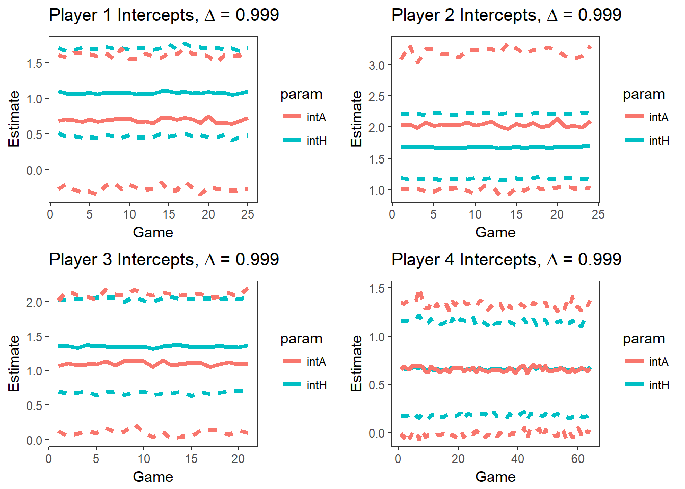
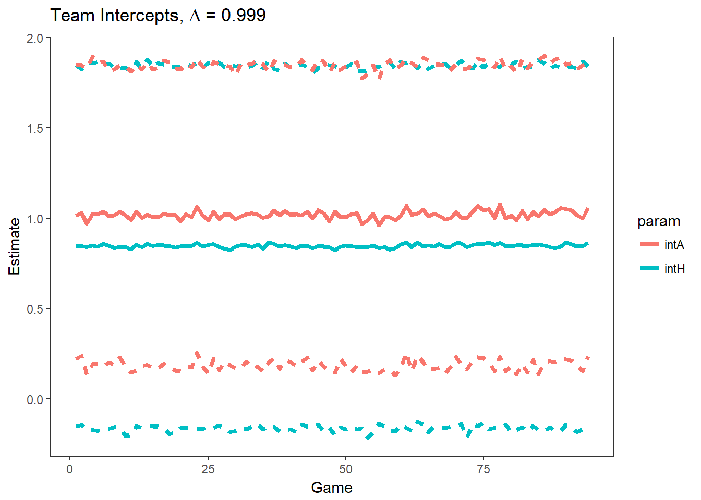
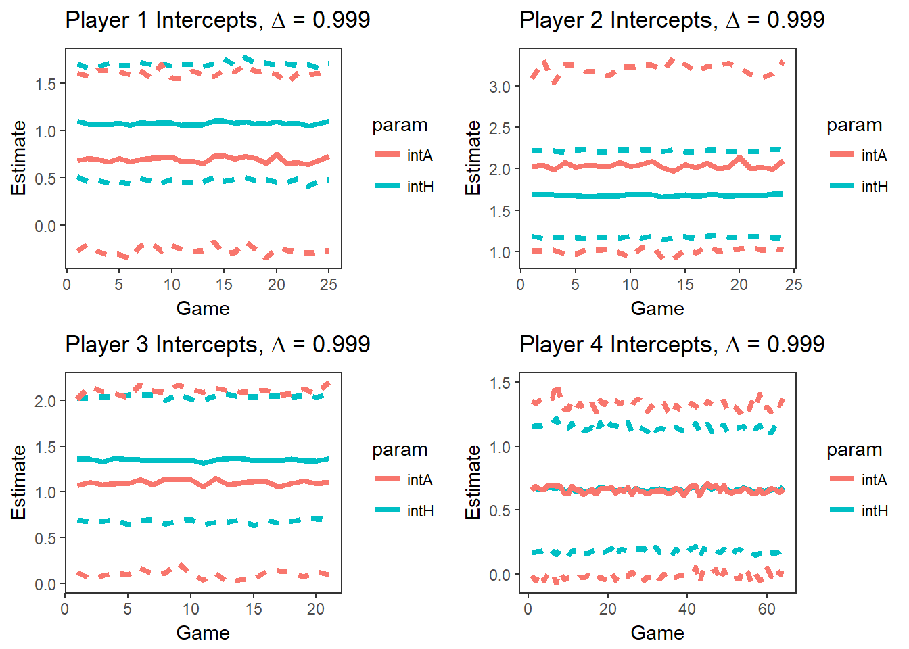
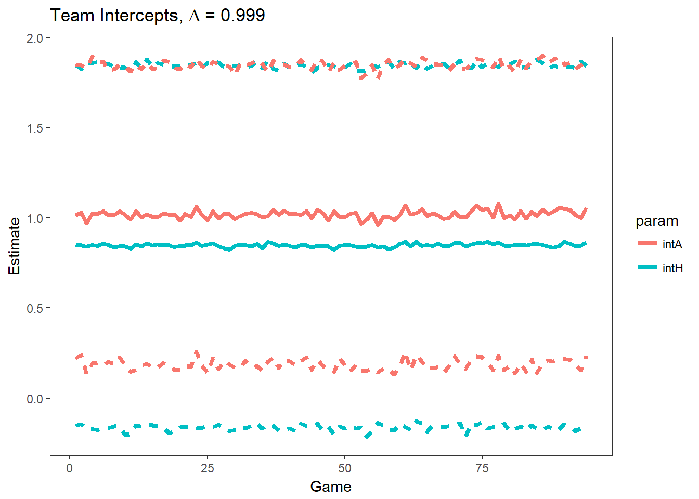

Chapter 4 Models & Analysis
4.1 Description of Models
For our models, we consider the shot location, the shooter identity, a home court indicator, and the shooting outcomes of nearby games as factors that can affect a shot outcome. In every model, we use Gibbs sampling in the JAGS library to build a logistic regression model that provides the posterior distribution of the shot location parameters (distance and angle). The model does not account for covariance between these predictors. In addition, we build mixed effects and discounted likelihood models to control for shooter identity and game identity, respectively. These models will show us how consistent the show location parameters are between shooters and between games. In our sampling method, we set priors using the Maximum Likelihood Estimates for the first four games in the dataset, and we initialize our chains using values of 0 for all means, and 1 for all variances.
The JAGS code used to build these models, as well as some diagnostic plots, can be found in Appendices number and number, respectively.
4.1.1 Generalized Linear Model
First, we build a logistic regression model of the following form:
\[ \text{log} \left( \frac{p}{1-p} \right) = \beta_{\text{int}} + X_{\text{r}}\beta_{\text{r}} + X_{\theta}\beta_{\theta} + X_{\text{H}}\beta_{\text{H}} + \epsilon \]
\[ \epsilon \sim N(0, \sigma^2) \]
In this model, \(X\) refers to the data, \(\beta\) is the estimated pareter from the model, and \(\epsilon\) is random error. The subscripts \(\text{int}\), \(\text{r}\), \(\theta\), and \(\text{H}\) respectively refer to the intercept, the log distance of the shot, the angle of the shot, and whether shot was taken on Duke’s home court or another gym.
4.1.2 Hierarchical Generalized Linear Model
Our second model is a hierarchical model, with random effects on the players.
\[ \text{log} \left( \frac{p}{1-p} \right) = \beta_{\text{int, j}} + X_{\text{r}}\beta_{\text{r, j}} + X_{\theta}\beta_{\theta, j} + X_{\text{H}}\beta_{\text{H, j}} + \epsilon \] \[ \beta_{\text{int, j}} \sim N(\beta_{\text{int}}, \tau^2_{\text{int}}) \] \[ \beta_{\text{r, j}} \sim N(\beta_{\text{r}}, \tau^2_{\text{r}}) \]
\[ \beta_{\theta, j} \sim N(\beta_{\theta}, \tau^2_{\theta}) \]
\[ \beta_{\text{H, j}} \sim N(\beta_{\text{H}}, \tau^2_{\text{H}}) \]
\[ \epsilon \sim N(0, \sigma^2) \]
This model contains random effects on each of the four parameters of interest—the intercept, the home effect, the distance effect, and the angle effect.
4.1.3 Discounted Likelihood Hierarchical Model
This model contains the same random effects as the above model. a couple more sentences
\[ \text{log} \left( \frac{p}{1-p} \right) = \beta_{\text{int, j}} + X_{\text{r}}\beta_{\text{r, j}} + X_{\theta}\beta_{\theta, j} + X_{\text{H}}\beta_{\text{H, j}} + \epsilon \]
\[ \phi = L(\text{p}) = \Pi_{\text{i=1}}^\text{n}(\text{p}_i)^{1-\text{y}_i} (1 - \text{p}_i)^{1-\text{y}_i} \]
\[ \delta = \Delta^{|g_i - g_0|} \]
\[ \pi = \phi^{\delta} \]
\[ \beta_{\text{int, j}} \sim N(\beta_{\text{int}}, \tau^2_{\text{int}}) \]
\[ \beta_{\text{r, j}} \sim N(\beta_{\text{r}}, \tau^2_{\text{r}}) \]
\[ \beta_{\theta, j} \sim N(\beta_{\theta}, \tau^2_{\theta}) \]
\[ \beta_{\text{H, j}} \sim N(\beta_{\text{H}}, \tau^2_{\text{H}}) \]
\[ \epsilon \sim N(0, \sigma^2) \] These equations show us that the contribution of an observed shot (in game \(g_i\)) to the likelihood of the current shot (in game \(g_0\)) decreases as the distance between the observations increases, and as \(\Delta\) decreases. The code for each otf these models is
We deal with the missing data by comparing the results over all games to the results on only home games, since no home games are missing in the dataset. The formal Bayesian analysis allows us to produce full quantified inferences on these patterns over time, with probabilistic summaries of the between-game outcomes. For each provided game, we will analyze player shooting tendencies and outcomes, which provides understanding of inherent variability (or “randomness”) for the players, and formal assessments of differences in patterns game-to-game. These results are illustrated in Appendix number.
4.2 Analysis
4.2.1 Generalized Linear Model
In our logistic regression model, we only look at shot location and the home court indicator as predictors for the shot outcome. To look at these effects for particular players, we simply subset the dataset to shots attempted by that player before running the Markov chain. The results of the credible intervals are reported for the same four players, in the same order as they were previously presented in the Exploratory Data Analysis section.


In the generalized linear model, the intercept corresponds to the log-odds of making a shot when angle is zero (the middle of the court) and the log distance is zero (one foot away from the hoop).
From these plots, we see that the team-wide 95% credible interval of the angle effect contains zero, and it is therefore probably not predictive of a made shot. The average distance effect shows us that the log-odds of a made shot decrease by \(\beta_r =\) -0.5372 as the log distance increases by one unit and the other predictors remain constant. In the probability scale, this means that the probability of a made shot dereases by
\[ \frac{\text{e}^{\beta_r}}{1 + \text{e}^{\beta_r}} \]
which is equal to 0.3689.
We also see that the 95% credible interval on the effect of distance is completely negative, which follows the intuitive idea that the probability of a made shot significantly decreases as distance from the basket increases. The intercepts show us that there is not a substantial diference in baseline shooting performance between home games and away games.
4.2.2 Hierarchical Generalized Linear Model
In this hierarchical model, we add random effects to allow the parameters to vary for each player in the dataset. We present the results below using densities of how the four players of interest compare to the team distribution, and by using contour plots that illustrate each player’s probability of a made shot by their location on the court.

The hierarchical model shows us characteristics of our four high-usage players of interest compared to the rest of the players in the dataset. For example, the intercept plots show us that Player 2 is excellent at finishing under baseline conditions, but he also has a steeper-than-averge drop in his odds of scoring as his distance from the basket increases. We can also see that Player 1 strongly increases his odds of scoring when his angle is negative, which corresponds to the left side of the basket.
In the figures below, we have contour plots showing players’ expected field goal percentages at different locations on the court. Between our four players of interest, we can observe how Player 1 is more effective on the left side of the basket than the others, and how Player 2 has the darkest overall contour plot, suggesting he has the highest probability of scoring among those four.


4.2.3 Discounted Likelihood Hierarchical Model
In the discounted likelihood models, the likelihood of a single observation is more heavily influenced by the observations close to it than the observations far away from it. We measure the “distance” between observations by the number of games between them; a shot attempt that occurs in the next or the preceding game will influence the likelihood of the observation more than a shot that occurs two games away. To build these models, we applied the “ones trick” in the JAGS library. See Appendix 1 for more details.
If models with larger values of \(\Delta\) fit the data better, this suggests that shooting success is consistent throughout a career. If smaller values of \(\Delta\) are more likely in the data, however, then we can assume there is a substantial amount of time variation in the data on the game level. The values of \(\Delta\) that we use to fit the discounted likelihood model are 0.750, 0.800, 0.850, 0.900, 0.950, and 0.999.

 

The plots above illustrate how the intercepts change for players over time. These plots illustrate that smaller values of \(\Delta\) allow for greater variation in parameter values over time.